library(tidyverse)
library(scales)
library(ggrepel)
library(patchwork)시각화: 관련 정보
다른 사람들이 데이터에 대한 좋은 멘탈 모델(mental model)을 빠르게 구축할 수 있도록 돕기 위해 플롯을 가능한 한 설명 없이도 이해할 수 있게(self-explanatory) 만드는 데 상당한 노력을 투자해야 합니다.
탐색적 플롯을 만들 때는 보기도 전에 플롯에 표시될 변수를 이미 알고 있습니다. 목적을 가지고 각 플롯을 만들고, 빠르게 살펴본 다음 다음 플롯으로 넘어갈 수 있었습니다. 대부분의 분석 과정에서 수십 또는 수백 개의 플롯을 생성하게 되며 그 중 대부분은 즉시 버려집니다.
여러분이 무엇을 원하는지 알고 있으며 단지 그것을 어떻게 하는지 알기만 하면 된다고 가정합니다. 이러한 이유로 이 장을 좋은 일반적인 시각화 서적과 함께 짝을 맞추어 읽는 것을 강력히 권장합니다.
특히 알베르토 카이로(Albert Cairo)의 The Truthful Art(https://www.amazon.com/gp/product/0321934075/)를 추천합니다. 이 책은 시각화 생성의 기술적인 메커니즘을 가르치지는 않지만 효과적인 그래픽을 만들기 위해 무엇을 생각해야 하는지에 초점을 맞춥니다.
데이터 조작을 위해 약간의 dplyr을, 기본 눈금(breaks), 라벨(labels), 변환(transformations), 팔레트(palettes)를 재정의하기 위해 scales를 사용할 것이고, Kamil Slowikowski의 ggrepel(https://ggrepel.slowkow.com)과 Thomas Lin Pedersen의 patchwork(https://patchwork.data-imaginist.com)을 포함한 몇 가지 ggplot2 확장 패키지를 사용할 것입니다. 해당 패키지들이 아직 없다면 install.packages()로 설치해야 한다는 것을 잊지 마세요.
1 라벨 (Labels)
탐색적 그래픽을 설명적(expository) 그래픽으로 바꿀 때 시작하기 쉬운 곳은 좋은 라벨(labels)입니다. labs() 함수를 사용하여 라벨을 추가합니다.
ggplot(mpg, aes(x = displ, y = hwy)) +
geom_point(aes(color = class)) +
geom_smooth(se = FALSE) +
labs(
x = "Engine displacement (L)",
y = "Highway fuel economy (mpg)",
color = "Car type",
title = "Fuel efficiency generally decreases with engine size",
subtitle = "Two seaters (sports cars) are an exception because of their light weight",
caption = "Data from fueleconomy.gov"
)![자동차의 고속도로 연료 효율 대 엔진 크기 산점도, 점들은 자동차 class에 따라 색상이 지정되어 있습니다. 자동차의 고속도로 연료 효율 대 엔진 크기 간 관계 궤적(trajectory)을 따르는 매끄러운 곡선(smooth curve)이 오버레이됩니다. x축에는 "Engine displacement (L)" 라벨이, y축에는 "Highway fuel economy (mpg)" 라벨이 지정되어 있습니다. 범례(legend)는 "Car type"이라는 라벨이 지정되어 있습니다. 플롯 제목은 "Fuel efficiency generally decreases with engine size(연료 효율은 일반적으로 엔진 크기에 따라 감소합니다)"입니다. 부제(subtitle)는 "Two seaters (sports cars) are an exception because of their light weight(2인승(스포츠카)은 가벼운 무게 때문에 예외입니다)"이며 캡션은 "Data from fueleconomy.gov"입니다.](ch07_files/figure-html/unnamed-chunk-2-1.png)
플롯 제목(title)의 목적은 주요 발견(main finding)을 요약하는 것입니다. 플롯이 무엇인지 설명하는 제목(“엔진 배기량 대 연료 경제성 산점도”)은 피하십시오.
더 많은 텍스트를 추가해야 하는 경우 다른 두 가지 유용한 라벨이 있습니다. subtitle은 제목 아래에 작은 글꼴로 추가 세부 정보를 더하고caption은 플롯의 오른쪽 하단에 텍스트를 추가하며 종종 데이터 출처를 설명하는 데 사용됩니다.labs()`를 사용하여 축 및 범례 제목을 바꿀 수도 있습니다. 짧은 변수 이름을 더 자세한 설명으로 바꾸고 단위를 포함하는 것이 일반적으로 좋은 생각입니다.
문자열 대신 수학 방정식(mathematical equations)을 사용할 수 있습니다. ""를 quote()로 바꾸고 ?plotmath에서 사용 가능한 옵션에 대해 읽어보세요.
df <- tibble(
x = 1:10,
y = cumsum(x^2)
)
ggplot(df, aes(x, y)) +
geom_point() +
labs(
x = quote(x[i]),
y = quote(sum(x[i] ^ 2, i == 1, n))
)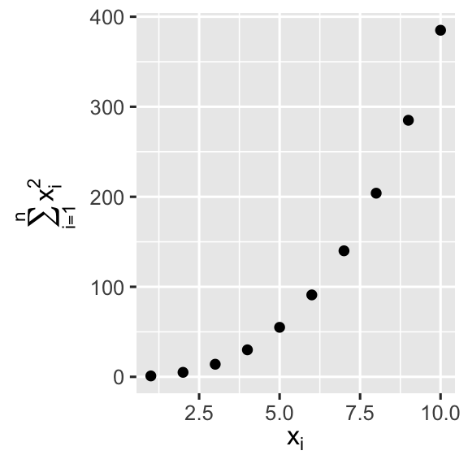
1.1 연습 문제 (Exercises)
사용자 정의된
title,subtitle,caption,x,y,color라벨이 포함된 fuel economy(연료 경제성) 데이터에 대한 플롯 하나를 만드세요.fuel economy 데이터를 사용하여 다음 플롯을 다시 만드세요. 구동계(drive train) 유형에 따라 점의 색상과 모양이 모두 다르다는 점에 유의하세요.
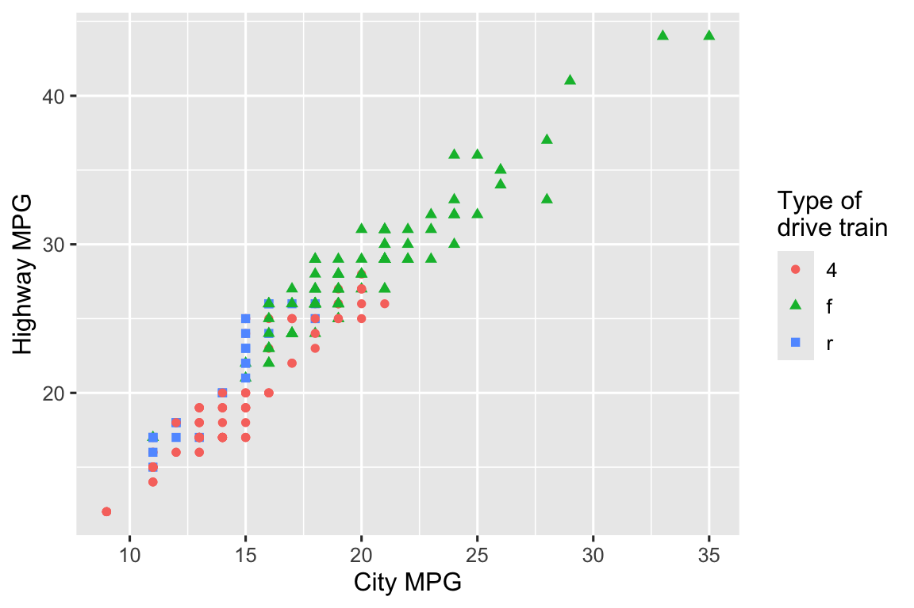
- 지난 달에 만든 탐색적 그래픽 중 하나를 가져와서 다른 사람들이 더 쉽게 이해할 수 있도록 유익한 정보성(informative) 제목을 추가해 보세요.
2 주석
플롯의 주요 구성 요소에 라벨을 지정하는 것 외에도 개별 관측치나 관측치 그룹에 라벨을 지정하는 것이 유용할 때가 많습니다. 자유롭게 사용할 수 있는 첫 번째 도구는 geom_text()입니다. geom_text()는 geom_point()와 유사하지만 추가 심미성인 label이 있습니다. 이를 통해 플롯에 텍스트 라벨을 추가할 수 있습니다.
라벨의 소스는 두 가지가 가능합니다. 첫째, 라벨을 제공하는 티블(tibble)이 있을 수 있습니다. 다음 플롯에서는 각 구동 유형에서 엔진 크기가 큰 자동차를 뽑아 그 정보를 label_info라는 새 데이터 프레임으로 저장합니다.
label_info <- mpg |>
group_by(drv) |>
arrange(desc(displ)) |>
slice_head(n = 1) |>
mutate(
drive_type = case_when(
drv == "f" ~ "front-wheel drive",
drv == "r" ~ "rear-wheel drive",
drv == "4" ~ "4-wheel drive"
)
) |>
select(displ, hwy, drv, drive_type)
label_info
#> # A tibble: 3 × 4
#> # Groups: drv [3]
#> displ hwy drv drive_type
#> <dbl> <int> <chr> <chr>
#> 1 6.5 17 4 4-wheel drive
#> 2 5.3 25 f front-wheel drive
#> 3 7 24 r rear-wheel drive그런 다음 이 새 데이터 프레임을 사용하여 범례를 플롯에 직접 배치된 라벨로 바꾸기 위해 세 그룹에 직접 라벨을 지정합니다. fontface 및 size 인수를 사용하여 텍스트 라벨의 모양을 사용자 정의할 수 있습니다. 플롯의 나머지 텍스트보다 크고 굵게 표시됩니다. (theme(legend.position = "none"은 모든 범례를 끕니다 — 이에 대해서는 곧 자세히 이야기하겠습니다.)
ggplot(mpg, aes(x = displ, y = hwy, color = drv)) +
geom_point(alpha = 0.3) +
geom_smooth(se = FALSE) +
geom_text(
data = label_info,
aes(x = displ, y = hwy, label = drive_type),
fontface = "bold", size = 5, hjust = "right", vjust = "bottom"
) +
theme(legend.position = "none")
#> `geom_smooth()` using method = 'loess' and formula = 'y ~ x'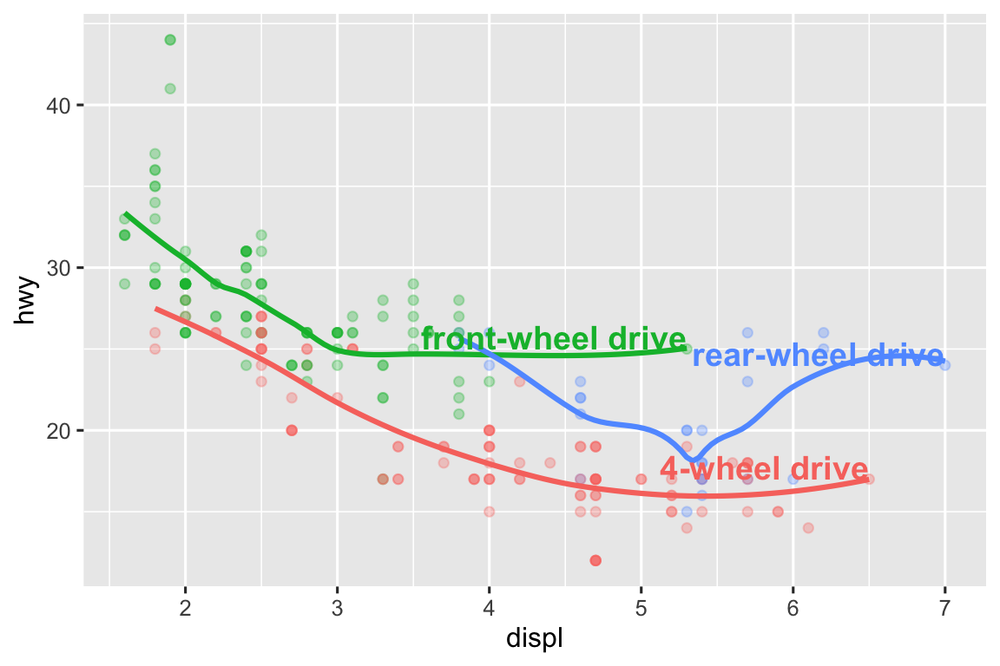
라벨의 정렬을 제어하기 위해 hjust(수평 정렬(horizontal justification)) 및 vjust(수직 정렬(vertical justification))를 사용하는 것에 유의하세요.
그러나 우리가 위에서 만든 주석이 달린 플롯은 라벨이 서로 겹치고 점들과 겹치기 때문에 읽기 어렵습니다. ggrepel 패키지의 geom_label_repel() 함수를 사용하여 이 두 가지 문제를 모두 해결할 수 있습니다. 이 유용한 패키지는 겹치지 않도록 라벨을 자동으로 조정합니다.
ggplot(mpg, aes(x = displ, y = hwy, color = drv)) +
geom_point(alpha = 0.3) +
geom_smooth(se = FALSE) +
geom_label_repel(
data = label_info,
aes(x = displ, y = hwy, label = drive_type),
fontface = "bold", size = 5, nudge_y = 2
) +
theme(legend.position = "none")
#> `geom_smooth()` using method = 'loess' and formula = 'y ~ x'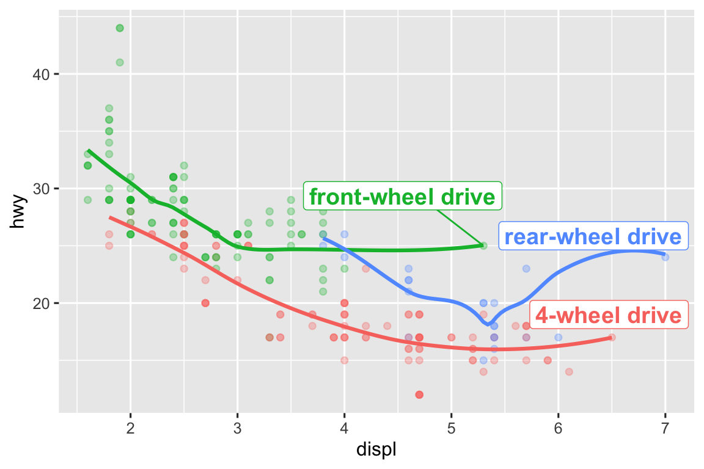
ggrepel 패키지의 geom_text_repel()을 사용하여 플롯의 특정 지점을 강조(highlight)하는 동일한 아이디어를 사용할 수도 있습니다. 여기서 사용된 또 다른 편리한 기술에 주목하세요. 라벨이 지정된 점을 더 강조하기 위해 크고 속이 빈 점으로 구성된 두 번째 레이어를 추가했습니다.
potential_outliers <- mpg |>
filter(hwy > 40 | (hwy > 20 & displ > 5))
ggplot(mpg, aes(x = displ, y = hwy)) +
geom_point() +
geom_text_repel(data = potential_outliers, aes(label = model)) +
geom_point(data = potential_outliers, color = "red") +
geom_point(
data = potential_outliers,
color = "red", size = 3, shape = "circle open"
)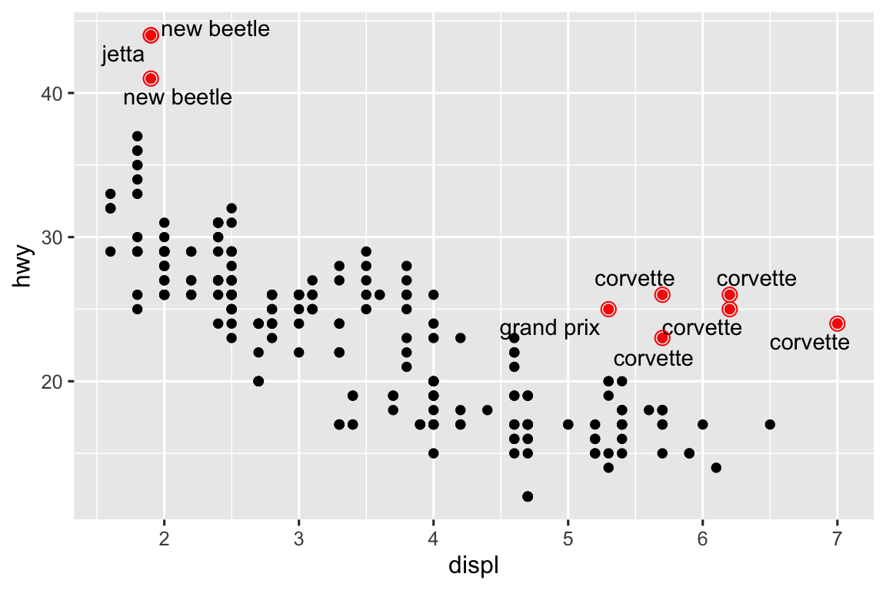
geom_text() 및 geom_label() 외에도 플롯에 주석을 추가하는 데 도움이 되는 다른 많은 지옴(geoms)이 ggplot2에 있다는 것을 기억하세요.
참조선(reference lines)을 추가하려면
geom_hline()및geom_vline()을 사용합니다. 우리는 종종 이 선을 굵게(linewidth = 2)하고 흰색(color = white)으로 만들며 주 데이터(primary data) 레이어 아래에 그립니다. 이렇게 하면 데이터에서 주의를 분산시키지 않으면서(without drawing attention away) 쉽게 볼 수 있습니다.관심 지점 주위에 사각형을 그리려면
geom_rect()를 사용합니다. 사각형의 경계는 심미성xmin,xmax,ymin,ymax로 정의됩니다. 또는 볼록 껍질(hulls)로 점들의 하위 집합(subsets of points)에 주석을 달 수 있는ggforce패키지(https://ggforce.data-imaginist.com/index.html), 특히geom_mark_hull()(https://ggforce.data-imaginist.com/reference/geom_mark_hull.html)을 살펴볼 수 있습니다.화살표로 한 점에 주의를 끌려면
arrow인수와 함께geom_segment()를 사용합니다. 시작 위치를 정의하려면 심미성x및y를 사용하고 종료 위치를 정의하려면xend및yend를 사용합니다.
플롯에 주석을 추가하기 위한 또 다른 편리한 함수는 annotate()입니다. 경험 법칙(rule of thumb)으로, 지옴은 일반적으로 데이터의 하위 집합을 강조하는 데 유용하고 annotate()는 플롯에 하나 또는 소수의 주석 요소를 추가하는 데 유용합니다.
annotate() 사용을 시연하기 위해 플롯에 추가할 텍스트를 만들어 보겠습니다. 텍스트가 다소 길기 때문에 줄당 원하는 문자 수를 지정하면 줄바꿈을 자동으로 추가하는 stringr::str_wrap()을 사용할 것입니다.
trend_text <- "Larger engine sizes tend to have lower fuel economy." |>
str_wrap(width = 30)
trend_text
#> [1] "Larger engine sizes tend to\nhave lower fuel economy."그런 다음 라벨 지옴과 세그먼 지옴이라는 두 레이어의 주석을 추가합니다. 둘 다의 x 및 y 심미성은 주석이 시작되어야 하는 위치를 정의하고, 세그먼트 주석의 xend 및 yend 심미성은 세그먼트의 종료 위치를 정의합니다. 또한 세그먼트가 화살표 스타일로 지정된다는 점에 유의하세요.
ggplot(mpg, aes(x = displ, y = hwy)) +
geom_point() +
annotate(
geom = "label", x = 3.5, y = 38,
label = trend_text,
hjust = "left", color = "red"
) +
annotate(
geom = "segment",
x = 3, y = 35, xend = 5, yend = 25, color = "red",
arrow = arrow(type = "closed")
)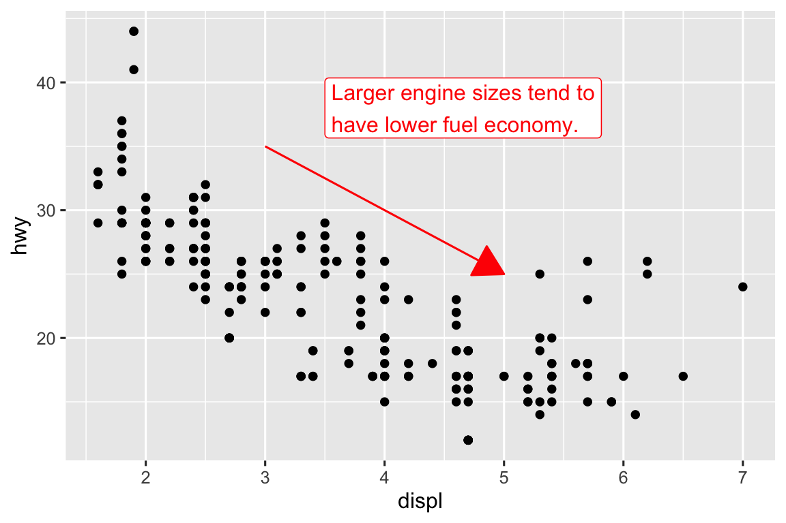
주석(Annotation)은 시각화의 주요 요점(main takeaways)과 흥미로운 특징(features)을 전달하기 위한 강력한 도구입니다. 유일한 한계는 여러분의 상상력(그리고 주석을 미학적으로 아름답게 배치하는 인내심)뿐입니다!
2.1 연습 문제
무한대(infinite) 위치를 가진
geom_text()를 사용하여 플롯의 네 모서리에 텍스트를 배치하세요.annotate()를 사용하여 티블을 만들지 않고 이전 플롯의 중간에 점 지옴(point geom)을 추가하세요. 점의 모양, 크기 또는 색상을 사용자 정의하세요.geom_text()가 있는 라벨은 패싯 처리(faceting)와 어떻게 상호 작용하나요? 단일 패싯에 라벨을 추가하려면 어떻게 해야 합니까? 각 패싯에 다른 라벨을 넣으려면 어떻게 해야 합니까? (힌트:geom_text()에 전달되는 데이터셋에 대해 생각해 보세요.)geom_label()의 어떤 인수가 배경 상자의 모양을 제어합니까?arrow()의 네 가지 인수는 무엇입니까? 그것들은 어떻게 작동합니까? 중요한 옵션을 보여주는 일련의 플롯을 만드세요.
3 스케일
소통을 위해 플롯을 더 좋게 만들 수 있는 세 번째 방법은 스케일(scales, 척도)을 조정하는 것입니다. 스케일은 심미성 매핑이 시각적으로 나타나는 방식을 제어합니다.
3.1 기본 스케일
일반적으로 ggplot2는 스케일을 자동으로 추가합니다.
ggplot(mpg, aes(x = displ, y = hwy)) +
geom_point(aes(color = class))ggplot2는 백그라운드에서(behind the scenes) 기본 스케일을 자동으로 추가합니다.
ggplot(mpg, aes(x = displ, y = hwy)) +
geom_point(aes(color = class)) +
scale_x_continuous() +
scale_y_continuous() +
scale_color_discrete()스케일의 명명 체계(naming scheme)에 유의하세요. scale_ 뒤에 심미성의 이름이 오고, 그 다음 _, 그리고 스케일의 이름이 옵니다.
기본 스케일은 스케일이 정렬되는 변수 유형(연속형(continuous), 이산형(discrete), 날짜시간(datetime) 또는 날짜(date))에 따라 이름이 지정됩니다.
scale_x_continuous()는 displ의 숫자 값을 x축의 연속 수직선(continuous number line)에 놓습니다. scale_color_discrete()는 자동차의 각 class에 대한 색상을 선택합니다 등등.
아래에서 배우게 될 수많은 비기본(non-default) 스케일들이 있습니다.
기본 스케일은 광범위한 입력에 대해 좋은 작업을 수행하도록 신중하게 선택되었습니다. 그럼에도 불구하고 두 가지 이유로 기본값을 재정의(override)하고 싶을 수 있습니다.
기본 스케일의 일부 매개변수를 조정(tweak)하고 싶을 수 있습니다. 이를 통해 축의 눈금(breaks)이나 범례의 주요 라벨(key labels)을 변경하는 등의 작업을 수행할 수 있습니다.
스케일을 완전히 대체하고 완전히 다른 알고리즘을 사용하고 싶을 수 있습니다. 데이터에 대해 더 많이 알고 있기 때문에 종종 기본값보다 더 잘 수행할 수 있습니다.
3.2 축 눈금 및 범례 키
축과 범례를 통틀어 가이드(guides)라고 부릅니다. 축은 x 및 y 심미성에 사용되고, 범례는 나머지 모든 것에 사용됩니다.
축의 틱(ticks, 눈금선)과 범례 키의 모양에 영향을 미치는 두 가지 주요 인수가 있습니다. breaks와 labels입니다. Breaks(눈금)는 틱의 위치 또는 키와 관련된 값을 제어합니다. Labels(라벨)는 각 틱/키와 관련된 텍스트 라벨을 제어합니다. breaks의 일반적인 용도는 기본 선택을 재정의하는 것입니다.
ggplot(mpg, aes(x = displ, y = hwy, color = drv)) +
geom_point() +
scale_y_continuous(breaks = seq(15, 40, by = 5)) 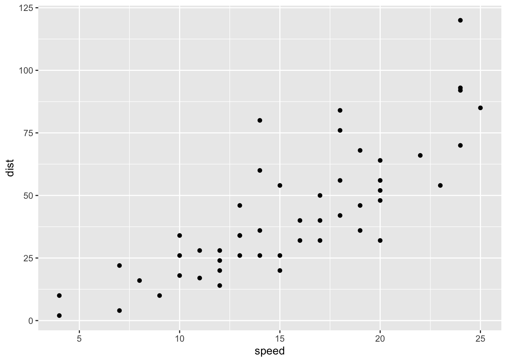
labels를 동일한 방식(breaks와 길이가 같은 문자 벡터)으로 사용할 수 있지만, 라벨을 완전히 억제하기 위해 NULL로 설정할 수도 있습니다. 이것은 지도나 절대 숫자를 공유할 수 없는 플롯을 게시(publishing)할 때 유용할 수 있습니다. breaks와 labels를 사용하여 범례의 모양을 제어할 수도 있습니다. 범주형 변수에 대한 이산형(discrete) 스케일의 경우 labels는 기존 수준(level) 이름과 원하는 라벨의 명명된 목록(named list)일 수 있습니다.
ggplot(mpg, aes(x = displ, y = hwy, color = drv)) +
geom_point() +
scale_x_continuous(labels = NULL) +
scale_y_continuous(labels = NULL) +
scale_color_discrete(labels = c("4" = "4-wheel", "f" = "front", "r" = "rear"))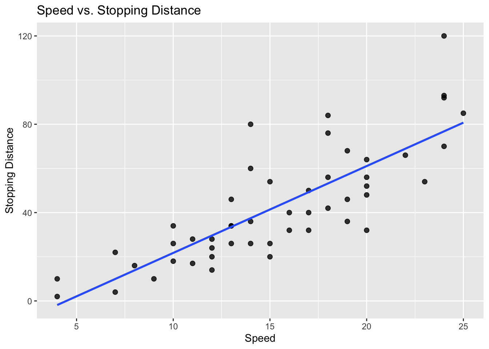
scales 패키지의 라벨링 함수(labelling functions)와 결합된 labels 인수는 숫자를 통화, 백분율 등으로 포맷하는 데에도 유용합니다. 왼쪽 플롯은 label_dollar()를 사용한 기본 라벨링을 보여주며, 달러 기호와 천 단위 구분 쉼표를 추가합니다.
오른쪽 플롯은 달러 값을 1,000으로 나누고 사용자 정의 눈금(breaks)을 추가할 뿐만 아니라 접미사 “K”(“수천”을 의미)를 추가하여 추가적인 사용자 정의를 더합니다. breaks는 데이터의 원래 스케일에 있다는 점에 유의하세요.
# Left
ggplot(diamonds, aes(x = price, y = cut)) +
geom_boxplot(alpha = 0.05) +
scale_x_continuous(labels = label_dollar())
# Right
ggplot(diamonds, aes(x = price, y = cut)) +
geom_boxplot(alpha = 0.05) +
scale_x_continuous(
labels = label_dollar(scale = 1/1000, suffix = "K"),
breaks = seq(1000, 19000, by = 6000)
)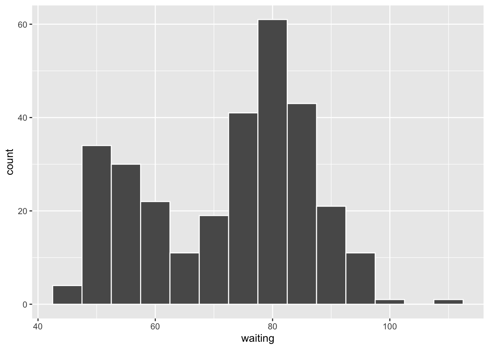
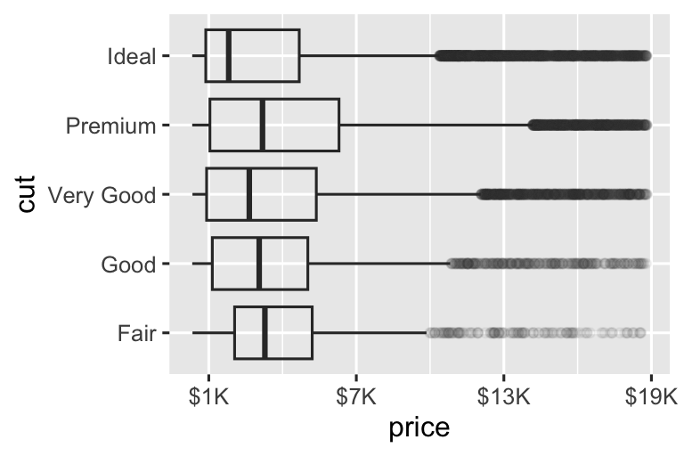
또 다른 편리한 라벨 함수는 label_percent()입니다.
ggplot(diamonds, aes(x = cut, fill = clarity)) +
geom_bar(position = "fill") +
scale_y_continuous(name = "Percentage", labels = label_percent())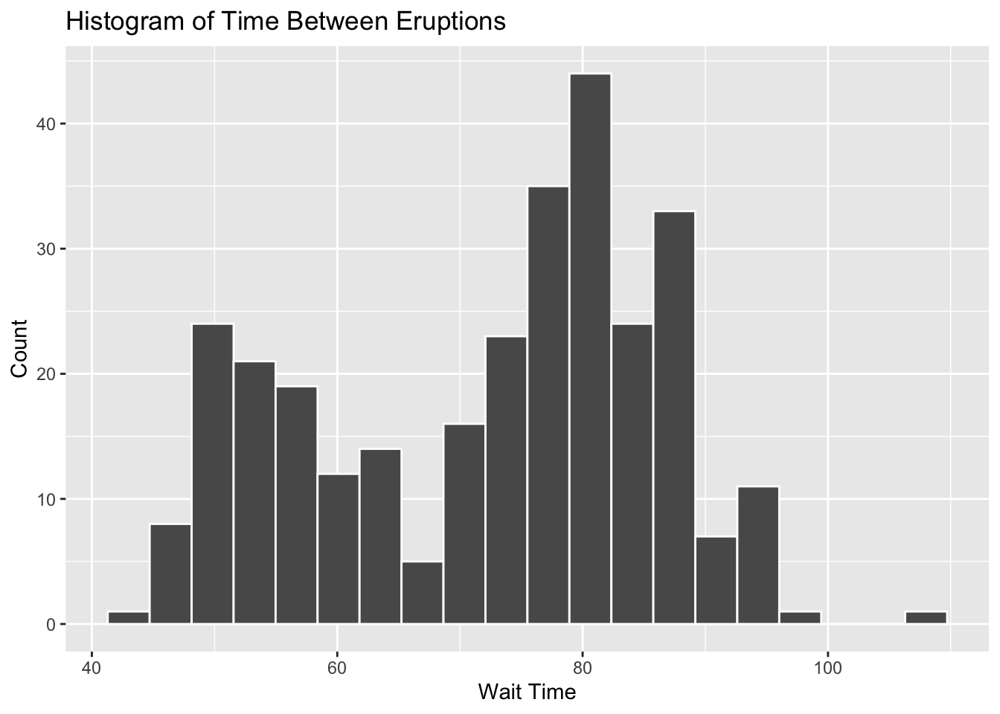
breaks의 또 다른 용도는 데이터 포인트가 비교적 적고 관측치가 발생하는 정확한 위치를 강조하고 싶을 때입니다. 예를 들어 각 미국 대통령의 임기 시작과 종료를 보여주는 이 플롯을 살펴보세요.
presidential |>
mutate(id = 33 + row_number()) |>
ggplot(aes(x = start, y = id)) +
geom_point() +
geom_segment(aes(xend = end, yend = id)) +
scale_x_date(name = NULL, breaks = presidential$start, date_labels = "'%y")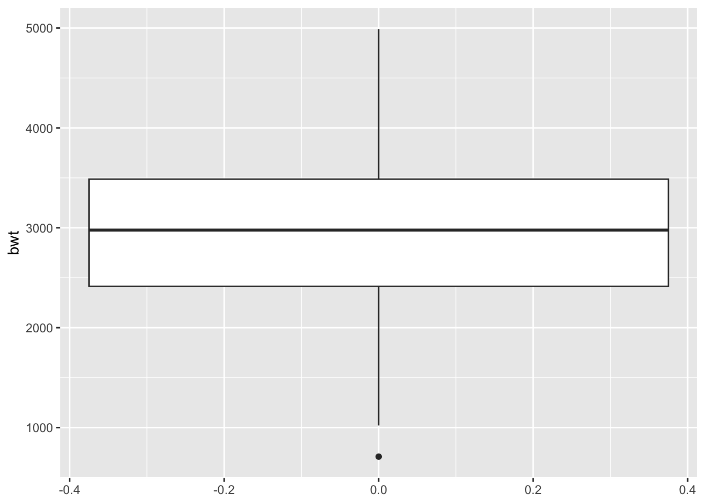
breaks 인수의 경우 이 인수에 대해 심미성 매핑을 수행할 수 없으므로 presidential$start를 사용하여 start 변수를 벡터로 뽑아냈습니다(pulled out). 또한 날짜(date) 및 날짜시간(datetime) 스케일에 대한 눈금 및 라벨 지정은 약간 다릅니다.
date_labels는parse_datetime()과 동일한 형태의 형식 지정(format specification)을 취합니다.date_breaks(여기에 표시되지 않음)는 “2 days” 또는 “1 month”와 같은 문자열을 취합니다.
3.3 범례 레이아웃
축을 조정하는 데 breaks 및 labels를 자주 사용할 것입니다. 둘 다 범례에도 작동하지만 사용할 가능성이 더 높은 몇 가지 다른 기술이 있습니다.
범례의 전체적인 위치를 제어하려면 theme() 설정을 사용해야 합니다. 이 장의 끝부분에서 테마에 대해 다시 설명하겠지만 간단히 말해서 플롯의 데이터가 아닌(non-data) 부분을 제어합니다. 테마 설정 legend.position은 범례가 그려지는 위치를 제어합니다.
base <- ggplot(mpg, aes(x = displ, y = hwy)) +
geom_point(aes(color = class))
base + theme(legend.position = "right") # the default
base + theme(legend.position = "left")
base +
theme(legend.position = "top") +
guides(color = guide_legend(nrow = 3))
base +
theme(legend.position = "bottom") +
guides(color = guide_legend(nrow = 3))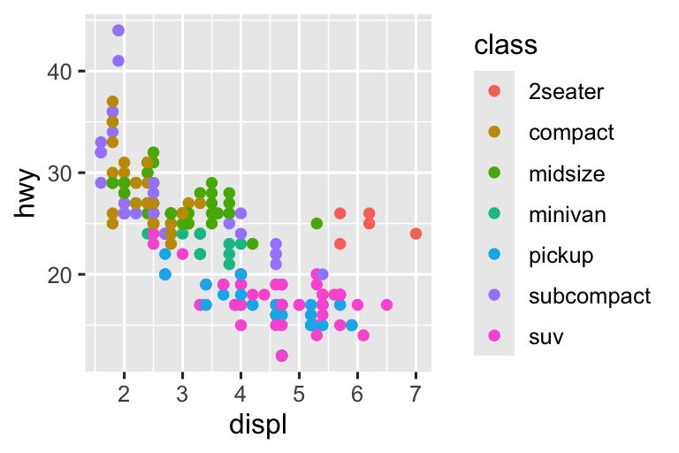
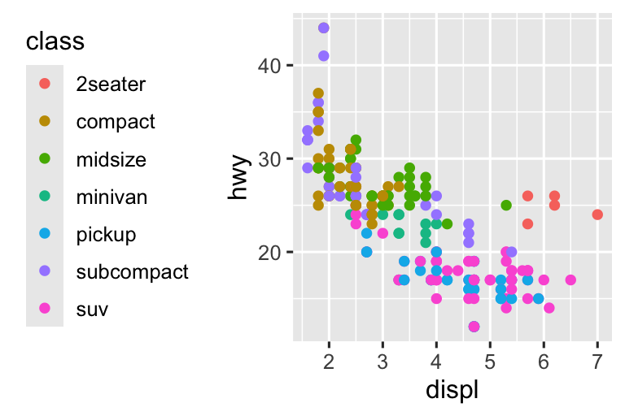
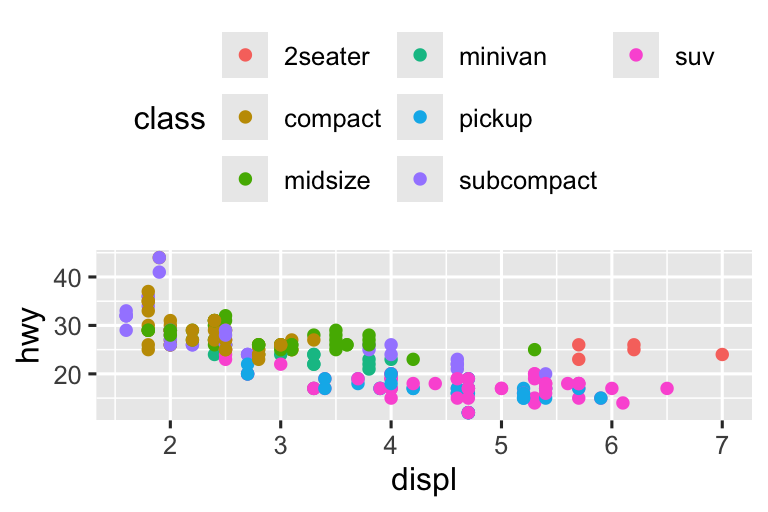
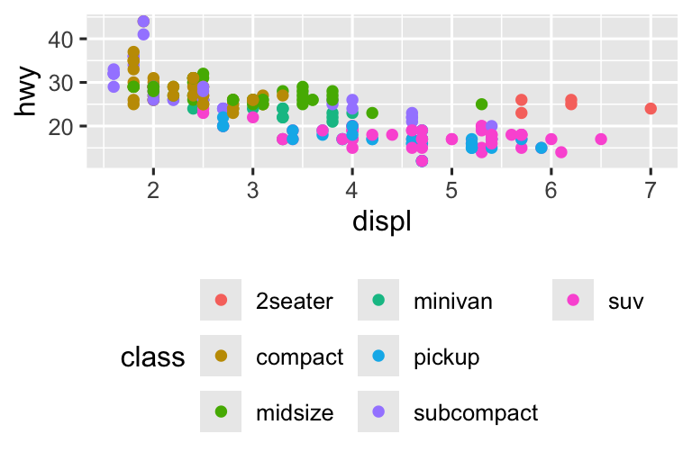
플롯이 짧고 넓은 경우 범례를 위나 아래에 배치하고 높고 좁은 경우 범례를 왼쪽이나 오른쪽에 배치합니다. legend.position = "none"을 사용하여 범례의 표시를 완전히 억제할 수도 있습니다.
개별 범례의 표시를 제어하려면 guides()를 guide_legend() 또는 guide_colorbar()와 함께 사용합니다. 다음 예는 두 가지 중요한 설정을 보여줍니다. nrow를 사용하여 범례가 사용하는 행 수를 제어하고 점을 더 크게 만들기 위해 심미성 중 하나를 재정의(overriding)합니다. 이것은 플롯에 많은 점을 표시하기 위해 낮은 alpha를 사용한 경우에 특히 유용합니다.
ggplot(mpg, aes(x = displ, y = hwy)) +
geom_point(aes(color = class)) +
geom_smooth(se = FALSE) +
theme(legend.position = "bottom") +
guides(color = guide_legend(nrow = 2, override.aes = list(size = 4)))
#> `geom_smooth()` using method = 'loess' and formula = 'y ~ x'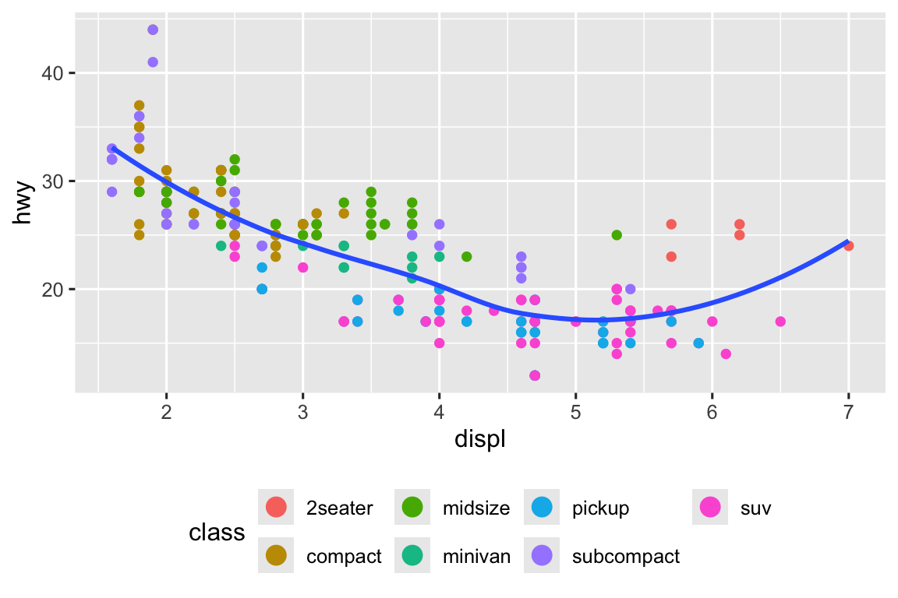
guides()의 인수 이름이 labs()에서처럼 심미성의 이름과 일치한다는 점에 유의하세요.
3.4 스케일 교체하기
세부 사항을 약간 조정하는 대신 스케일을 완전히 교체(replace)할 수 있습니다. 바꾸고 싶어할 가능성이 높은 스케일에는 연속 위치 스케일(continuous position scales)과 색상 스케일(color scales)이라는 두 가지 유형이 있습니다. 다행히도 다른 모든 심미성에도 동일한 원리가 적용되므로 위치와 색상에 마스터하면 다른 스케일 교체도 빠르게 익힐 수 있습니다.
변수의 변환(transformations)을 플롯하는 것은 매우 유용합니다. 예를 들어 carat과 price를 로그 변환(log transform)하면 두 변수 사이의 정확한 관계를 더 쉽게 볼 수 있습니다.
# Left
ggplot(diamonds, aes(x = carat, y = price)) +
geom_bin2d()
#> `stat_bin2d()` using `bins = 30`. Pick better value `binwidth`.
# Right
ggplot(diamonds, aes(x = log10(carat), y = log10(price))) +
geom_bin2d()
#> `stat_bin2d()` using `bins = 30`. Pick better value `binwidth`.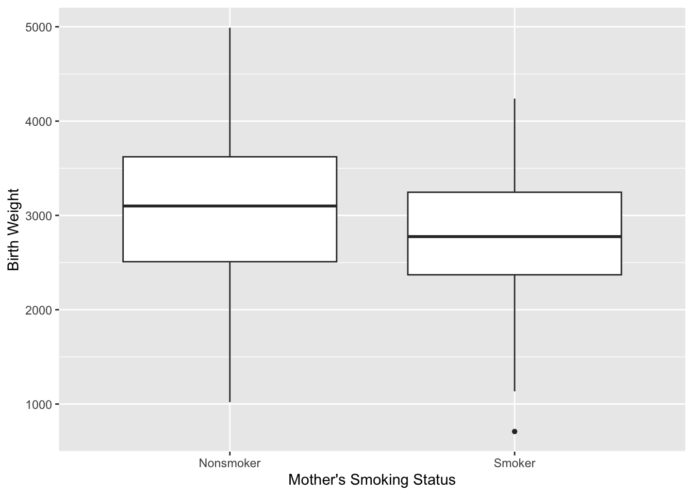
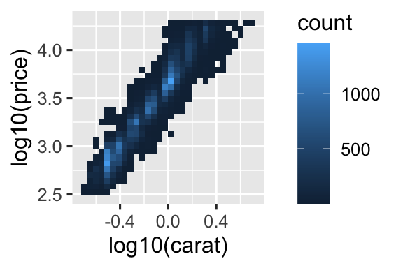
그러나 이 변환의 단점은 이제 축이 변환된 값으로 표시되어 플롯을 해석하기 어렵다는 것입니다. 심미성 매핑에서 변환을 수행하는 대신 스케일을 사용하여 수행할 수 있습니다. 축이 원래 데이터 스케일로 표시된다는 점을 제외하면 시각적으로 동일합니다.
ggplot(diamonds, aes(x = carat, y = price)) +
geom_bin2d() +
scale_x_log10() +
scale_y_log10()
#> `stat_bin2d()` using `bins = 30`. Pick better value `binwidth`.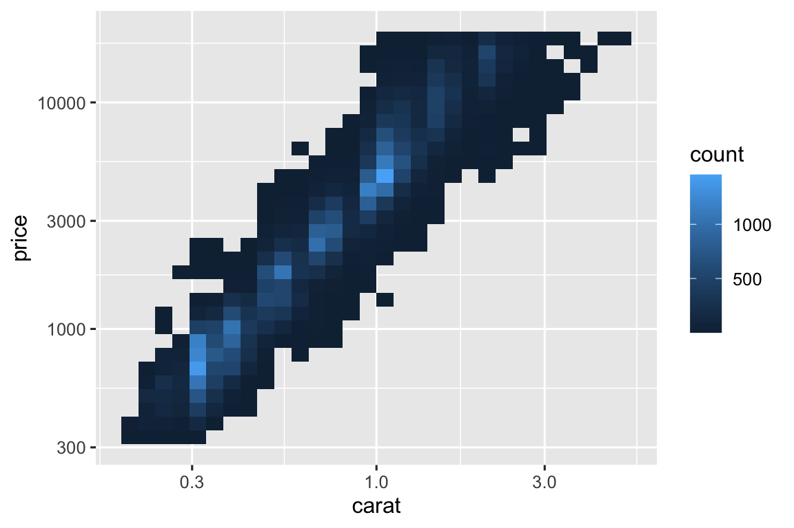
자주 사용자 정의되는 또 다른 스케일은 색상(color)입니다. 기본 범주형 스케일은 색상환(color wheel) 주위에서 균일한 간격의 색상을 선택합니다. 일반적인 유형의 색맹(color blindness)을 가진 사람들에게 더 잘 작동하도록 수동으로 조정된 ColorBrewer 스케일이 유용한 대안입니다. 아래 두 플롯은 비슷해 보이지만 적색과 녹색의 색조(shades) 차이가 충분하여 적록 색맹이 있는 사람들도 오른쪽 플롯의 점을 구별할 수 있습니다.1
ggplot(mpg, aes(x = displ, y = hwy)) +
geom_point(aes(color = drv))
ggplot(mpg, aes(x = displ, y = hwy)) +
geom_point(aes(color = drv)) +
scale_color_brewer(palette = "Set1")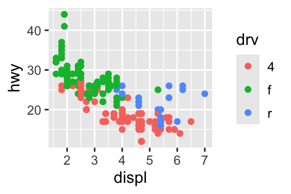
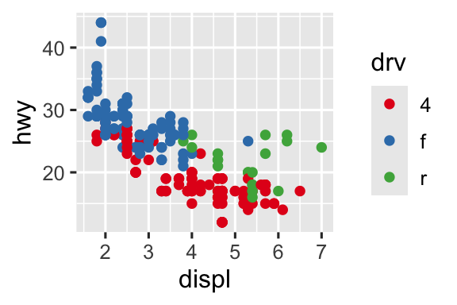
접근성(accessibility)을 개선하기 위한 간단한 기술도 잊지 마세요. 색상이 몇 가지밖에 없는 경우 중복(redundant) 모양 매핑을 추가할 수 있습니다. 이렇게 하면 플롯을 흑백으로도 해석할 수 있습니다.
ggplot(mpg, aes(x = displ, y = hwy)) +
geom_point(aes(color = drv, shape = drv)) +
scale_color_brewer(palette = "Set1")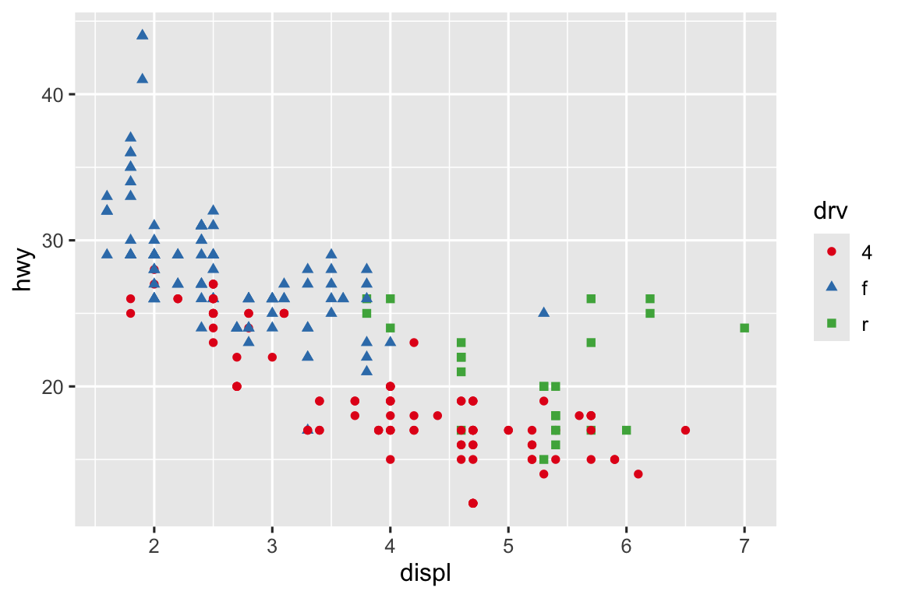
ColorBrewer 스케일은 https://colorbrewer2.org/에 온라인으로 문서화되어 있으며 Erich Neuwirth의 RColorBrewer 패키지를 통해 R에서 사용할 수 있습니다.
순차적(sequential)(위쪽) 및 발산형(diverging)(아래쪽) 팔레트는 범주형 값에 순서가 있거나 “중간(middle)”이 있는 경우 특히 유용합니다. 이는 cut()을 사용하여 연속형 변수를 범주형 변수로 만든 경우 자주 발생합니다.
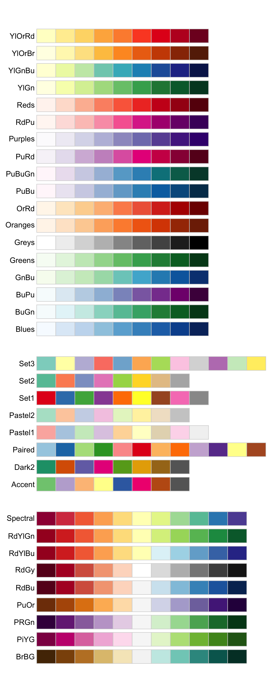
값과 색상 사이에 미리 정의된 매핑이 있는 경우 scale_color_manual()을 사용하세요. 예를 들어 대통령의 소속 정당(party)을 색상에 매핑하는 경우 공화당원(Republicans)은 빨간색, 민주당원(Democrats)은 파란색이라는 표준 매핑을 사용하고 싶을 것입니다. 이러한 색상을 할당하는 한 가지 접근법은 16진수 색상 코드(hex color codes)를 사용하는 것입니다.
presidential |>
mutate(id = 33 + row_number()) |>
ggplot(aes(x = start, y = id, color = party)) +
geom_point() +
geom_segment(aes(xend = end, yend = id)) +
scale_color_manual(values = c(Republican = "#E81B23", Democratic = "#00AEF3"))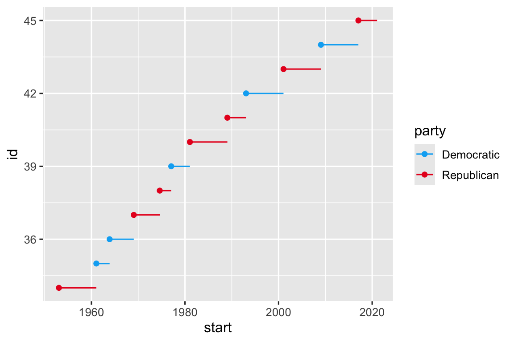
연속형 색상의 경우 내장된 scale_color_gradient() 또는 scale_fill_gradient()를 사용할 수 있습니다. 발산형 스케일이 있는 경우 scale_color_gradient2()를 사용할 수 있습니다. 예를 들어 이를 통해 양수 및 음수 값에 다른 색상을 지정할 수 있습니다. 평균 위나 아래의 점을 구별하고 싶을 때도 때때로 유용합니다.
또 다른 옵션은 viridis 색상 스케일을 사용하는 것입니다. 디자이너인 Nathaniel Smith와 Stéfan van der Walt는 다양한 형태의 색맹을 가진 사람들도 감지할 수 있을 뿐만 아니라 색상과 흑백 모두에서 지각적으로 균일한(perceptually uniform) 연속형 색상 구성(continuous color schemes)을 신중하게 맞춤 제작(tailored)했습니다. 이러한 스케일은 ggplot2에서 연속형(c), 이산형(d), 구간형(b) 팔레트로 사용할 수 있습니다.
df <- tibble(
x = rnorm(10000),
y = rnorm(10000)
)
ggplot(df, aes(x, y)) +
geom_hex() +
coord_fixed() +
labs(title = "Default, continuous", x = NULL, y = NULL)
#> Warning: Computation failed in `stat_binhex()`.
#> Caused by error in `compute_group()` at ggplot2/R/ggproto.R:196:17:
#> ! The package "hexbin" is required for `stat_bin_hex()`.
ggplot(df, aes(x, y)) +
geom_hex() +
coord_fixed() +
scale_fill_viridis_c() +
labs(title = "Viridis, continuous", x = NULL, y = NULL)
#> Warning: Computation failed in `stat_binhex()`.
#> Caused by error in `compute_group()` at ggplot2/R/ggproto.R:196:17:
#> ! The package "hexbin" is required for `stat_bin_hex()`.
ggplot(df, aes(x, y)) +
geom_hex() +
coord_fixed() +
scale_fill_viridis_b() +
labs(title = "Viridis, binned", x = NULL, y = NULL)
#> Warning: Computation failed in `stat_binhex()`.
#> Caused by error in `compute_group()` at ggplot2/R/ggproto.R:196:17:
#> ! The package "hexbin" is required for `stat_bin_hex()`.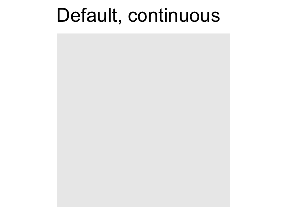
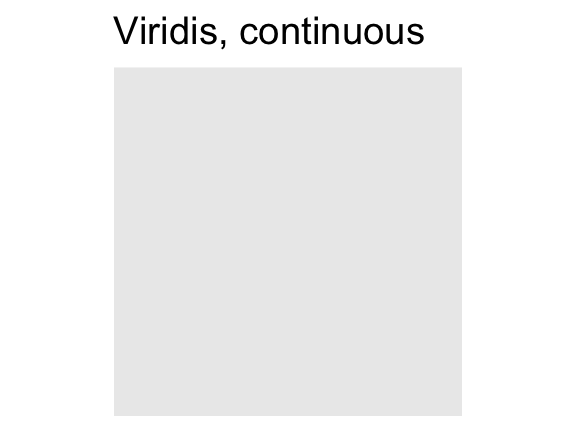
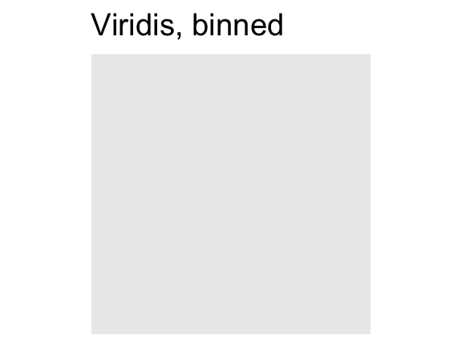
모든 색상 스케일은 각각 color와 fill 심미성을 위해 두 가지 종류로 제공됩니다. scale_color_*()와 scale_fill_*() (색상 스케일은 영국식 및 미국식 철자법(color와 colour) 모두 사용할 수 있습니다).
3.5 확대
플롯 한계(limits)를 제어하는 세 가지 방법이 있습니다.
- 플롯되는 데이터를 조정합니다.
- 각 스케일에서 한계를 설정합니다.
coord_cartesian()에서xlim및ylim을 설정합니다.
일련의 플롯에서 이러한 옵션을 시연해 보겠습니다. 왼쪽 플롯은 구동계 유형에 따라 색상이 지정된 엔진 크기와 연료 효율 사이의 관계를 보여줍니다. 오른쪽 플롯은 동일한 변수를 보여주지만 플롯되는 데이터를 부분 집합으로 나눕니다(subsets). 데이터를 부분 집합으로 나누는 것은 매끄러운 곡선뿐만 아니라 x 및 y 스케일에도 영향을 미쳤습니다.
# Left
ggplot(mpg, aes(x = displ, y = hwy)) +
geom_point(aes(color = drv)) +
geom_smooth()
# Right
mpg |>
filter(displ >= 5 & displ <= 6 & hwy >= 10 & hwy <= 25) |>
ggplot(aes(x = displ, y = hwy)) +
geom_point(aes(color = drv)) +
geom_smooth()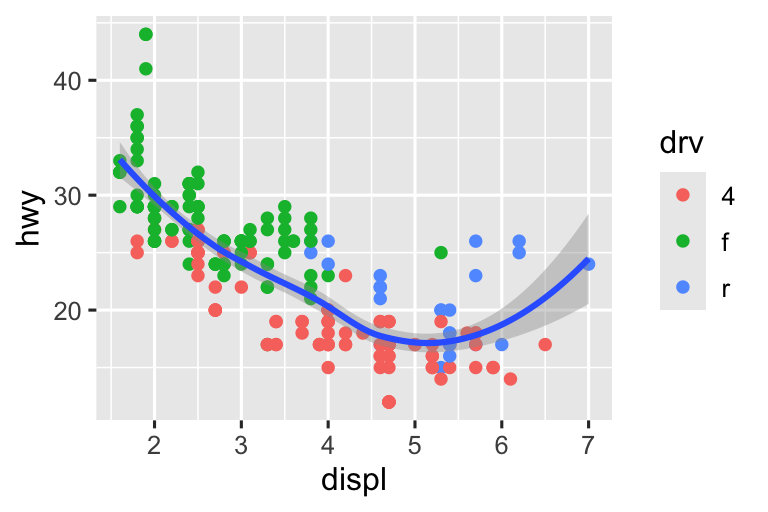
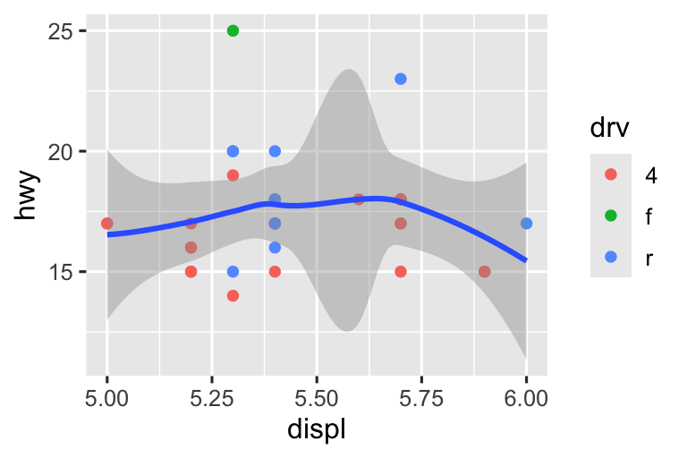
이것들을 왼쪽 플롯은 개별 스케일에 limits를 설정하고 오른쪽 플롯은 coord_cartesian()에서 이를 설정하는 아래 두 플롯과 비교해 보겠습니다. 한계를 줄이는 것이 데이터를 부분 집합으로 나누는 것과 동일(equivalent)하다는 것을 알 수 있습니다. 따라서 플롯의 특정 영역을 확대(zoom in)하려면 일반적으로 coord_cartesian()을 사용하는 것이 좋습니다.
# Left
ggplot(mpg, aes(x = displ, y = hwy)) +
geom_point(aes(color = drv)) +
geom_smooth() +
scale_x_continuous(limits = c(5, 6)) +
scale_y_continuous(limits = c(10, 25))
# Right
ggplot(mpg, aes(x = displ, y = hwy)) +
geom_point(aes(color = drv)) +
geom_smooth() +
coord_cartesian(xlim = c(5, 6), ylim = c(10, 25))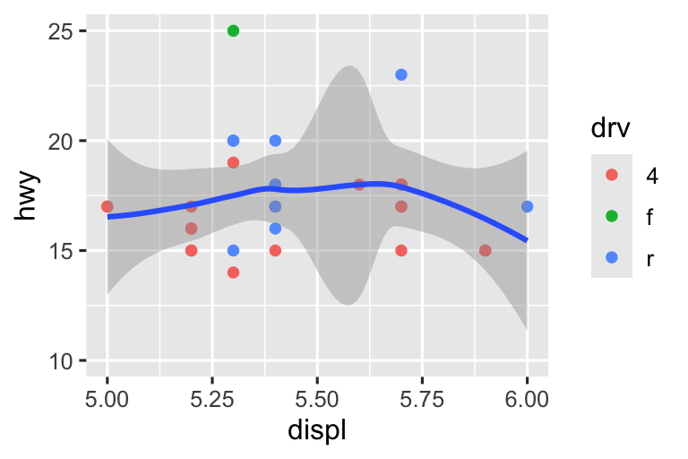
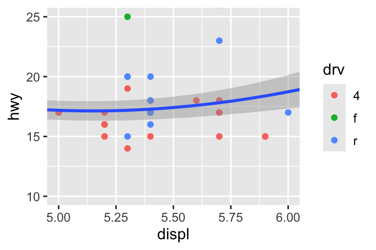
반면에 개별 스케일에서 limits를 설정하는 것은 한계를 확장(expand) 하려는 경우, 예컨대 다른 플롯들에 걸쳐 스케일을 일치시키려는 경우에 일반적으로 더 유용합니다. 예를 들어 두 클래스의 자동차를 추출하여 개별적으로 플롯하는 경우 세 가지 스케일(x축, y축, 색상 심미성) 모두 범위(ranges)가 다르기 때문에 플롯을 비교하기 어렵습니다.
suv <- mpg |> filter(class == "suv")
compact <- mpg |> filter(class == "compact")
# Left
ggplot(suv, aes(x = displ, y = hwy, color = drv)) +
geom_point()
# Right
ggplot(compact, aes(x = displ, y = hwy, color = drv)) +
geom_point()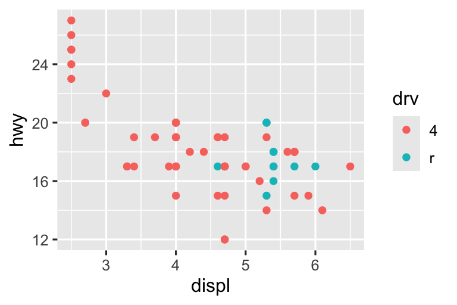
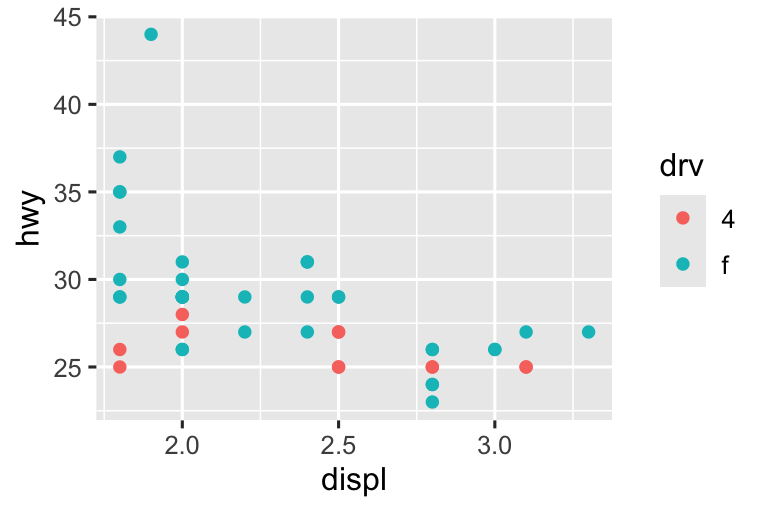
이 문제를 극복하는 한 가지 방법은 전체 데이터의 limits로 스케일을 훈련(training)시켜 여러 플롯 간에 스케일을 공유하는 것입니다.
x_scale <- scale_x_continuous(limits = range(mpg$displ))
y_scale <- scale_y_continuous(limits = range(mpg$hwy))
col_scale <- scale_color_discrete(limits = unique(mpg$drv))
# Left
ggplot(suv, aes(x = displ, y = hwy, color = drv)) +
geom_point() +
x_scale +
y_scale +
col_scale
# Right
ggplot(compact, aes(x = displ, y = hwy, color = drv)) +
geom_point() +
x_scale +
y_scale +
col_scale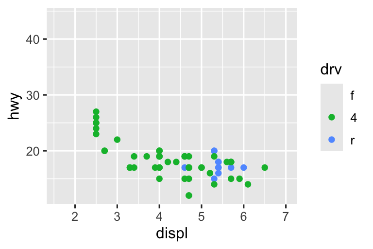
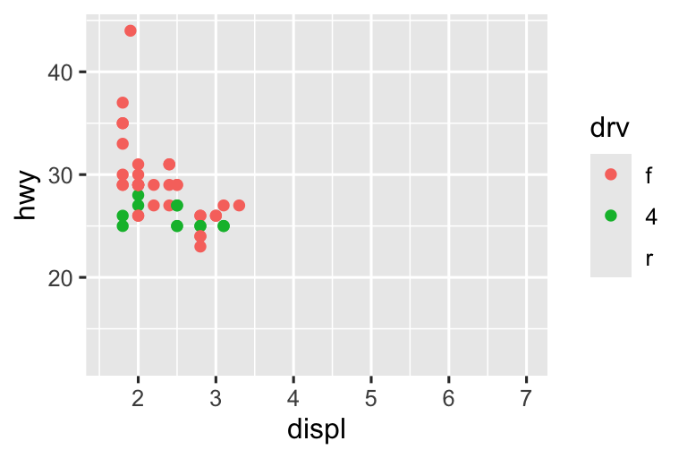
이 특정 경우(particular case)에는 단순히 패싯(faceting)을 사용할 수 있었지만 이 기술은 예를 들어 여러 페이지의 보고서에 플롯을 분산(spread)시키려는 경우 일반적으로 유용합니다.
3.6 연습 문제 (Exercises)
- 다음 코드가 기본 스케일을 재정의하지 않는 이유는 무엇입니까?
df <- tibble(
x = rnorm(10000),
y = rnorm(10000)
)
ggplot(df, aes(x, y)) +
geom_hex() +
scale_color_gradient(low = "white", high = "red") +
coord_fixed()
#> Warning: Computation failed in `stat_binhex()`.
#> Caused by error in `compute_group()` at ggplot2/R/ggproto.R:196:17:
#> ! The package "hexbin" is required for `stat_bin_hex()`.모든 스케일의 첫 번째 인수는 무엇입니까?
labs()와 어떻게 비교됩니까?다음과 같이 대통령 임기의 표시를 변경해 보세요.
- 색상과 x축 눈금을 사용자 정의하는 두 가지 변형(variants)을 결합합니다.
- y축의 표시를 개선합니다.
- 각 임기에 대통령의 이름을 라벨로 지정합니다.
- 유익한 정보성 플롯 라벨을 추가합니다.
- 4년마다 눈금을 배치합니다(이것은 보기보다 까다롭습니다!).
- 먼저 다음 플롯을 만드세요. 그런 다음 범례를 더 쉽게 볼 수 있도록
override.aes를 사용하여 코드를 수정하세요.
ggplot(diamonds, aes(x = carat, y = price)) +
geom_point(aes(color = cut), alpha = 1/20)4 테마 (Themes)
마지막으로 테마(theme)를 사용하여 플롯의 데이터가 아닌 요소를 사용자 정의할 수 있습니다.
ggplot(mpg, aes(x = displ, y = hwy)) +
geom_point(aes(color = class)) +
geom_smooth(se = FALSE) +
theme_bw()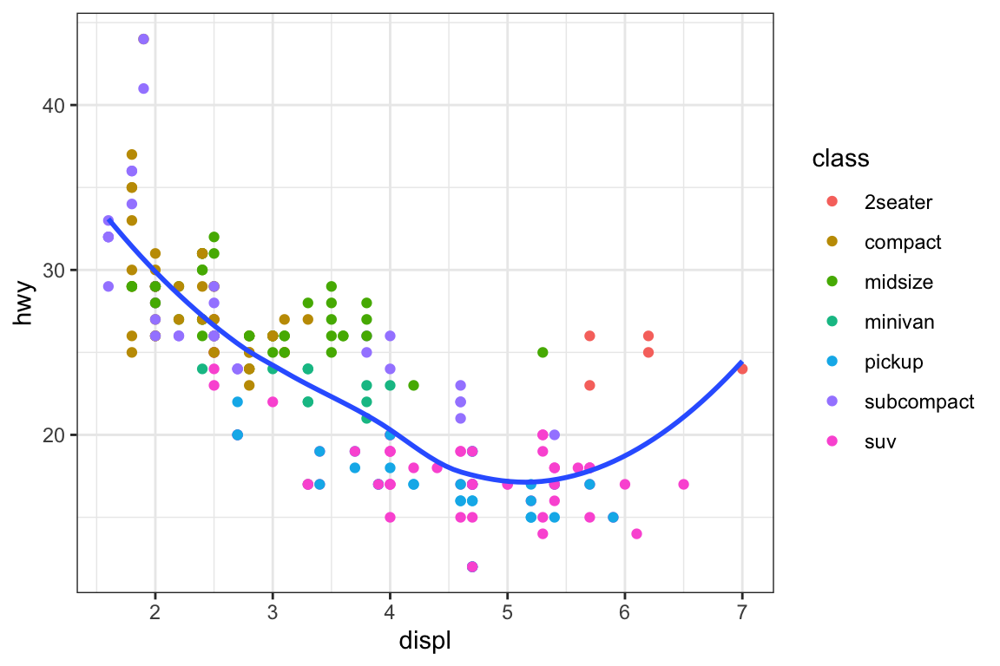
ggplot2에는 8개의 테마가 포함되어 있으며 기본값으로 theme_gray()가 있습니다.2 Jeffrey Arnold의 ggthemes(https://jrnold.github.io/ggthemes)와 같은 애드온 패키지에는 더 많은 것이 포함되어 있습니다. 특정 회사나 저널 스타일에 맞추려는 경우 자신만의 테마를 만들 수도 있습니다.
y축에 사용되는 글꼴의 크기나 색상과 같이 각 테마의 개별 구성 요소(components)를 제어하는 것도 가능합니다. 우리는 이미 legend.position이 범례가 그려지는 위치를 제어한다는 것을 보았습니다. theme()으로 사용자 정의할 수 있는 범례의 측면(aspects)이 많이 있습니다. 예를 들어 아래 플롯에서는 범례의 방향(direction)을 바꾸고 그 주위에 검은색 테두리(border)를 놓습니다. 테마의 범례 상자 및 플롯 제목 요소의 사용자 정의는 element_*() 함수로 수행된다는 점에 유의하세요.
이러한 함수는 데이터가 아닌 구성 요소의 스타일링을 지정합니다. 예컨대 제목 텍스트는 element_text()의 face 인수에서 굵게 표시되고 범례 테두리 색상은 element_rect()의 color 인수에서 정의됩니다. 제목과 캡션의 위치를 제어하는 테마 요소는 각각 plot.title.position과 plot.caption.position입니다. 다음 플롯에서 이 값은 플롯 패널(기본값) 대신 전체 플롯 영역(entire plot area)에 정렬됨을 나타내기 위해 "plot"으로 설정됩니다. 제목 및 캡션 텍스트 형식의 배치를 변경하기 위해 몇 가지 다른 유용한 theme() 구성 요소가 사용됩니다.
ggplot(mpg, aes(x = displ, y = hwy, color = drv)) +
geom_point() +
labs(
title = "Larger engine sizes tend to have lower fuel economy",
caption = "Source: https://fueleconomy.gov."
) +
theme(
legend.position = c(0.6, 0.7),
legend.direction = "horizontal",
legend.box.background = element_rect(color = "black"),
plot.title = element_text(face = "bold"),
plot.title.position = "plot",
plot.caption.position = "plot",
plot.caption = element_text(hjust = 0)
)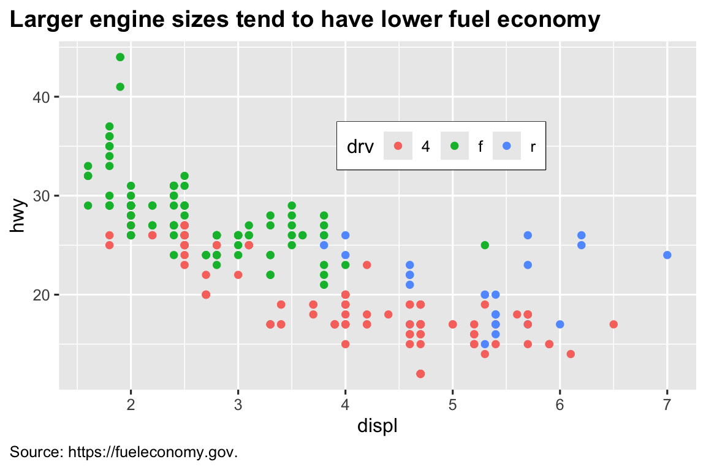
모든 theme() 구성 요소에 대한 개요를 보려면 ?theme 도움말을 참조하세요. ggplot2 book(https://ggplot2-book.org/)도 테마 설정에 대한 전체 세부 정보를 확인할 수 있는 훌륭한 곳입니다.
4.1 연습 문제
- ggthemes 패키지에서 제공하는 테마를 하나 골라 마지막으로 만든 플롯에 적용하세요.
- 플롯의 축 라벨을 파란색이고 굵게(bold) 만드세요.
5 레이아웃
지금까지 단일 플롯을 만들고 수정하는 방법에 대해 이야기했습니다. 특정 방식(certain way)으로 배치하고 싶은 여러 플롯이 있다면 어떻게 될까요? patchwork 패키지를 사용하면 별도의 플롯을 동일한 그래픽으로 결합할 수 있습니다. 이 장의 앞부분에서 이 패키지를 로드했습니다.
두 개의 플롯을 나란히(next to each other) 배치하려면 서로에게 추가하기만 하면 됩니다. 먼저 플롯을 만들어 객체(objects)로 저장해야 합니다(다음 예에서는 p1과 p2라고 부릅니다). 그런 다음 +로 서로 옆에 배치합니다.
p1 <- ggplot(mpg, aes(x = displ, y = hwy)) +
geom_point() +
labs(title = "Plot 1")
p2 <- ggplot(mpg, aes(x = drv, y = hwy)) +
geom_boxplot() +
labs(title = "Plot 2")
p1 + p2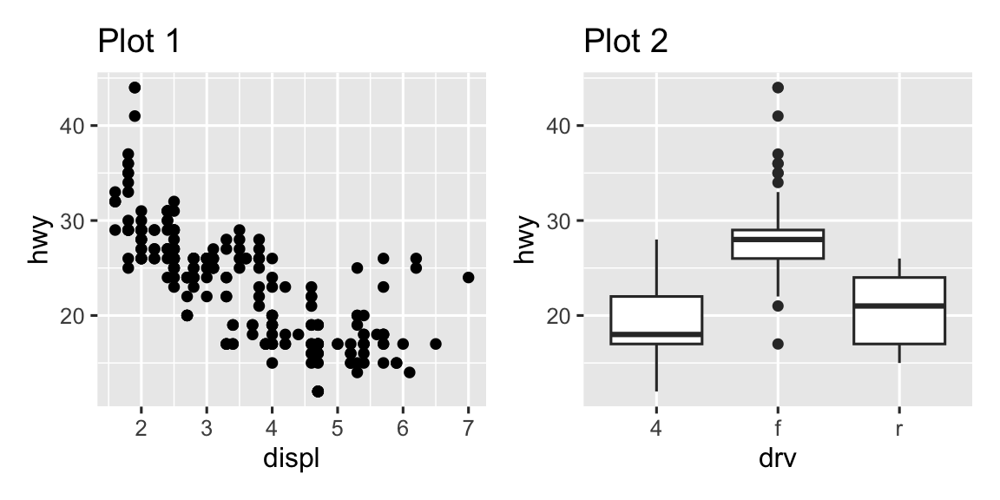
위의 코드 청크에서 patchwork 패키지의 새 함수를 사용하지 않았다는 점에 유의하는 것이 중요합니다. 대신 패키지가 + 연산자에 새로운 기능(functionality)을 추가했습니다.
patchwork를 사용하여 복잡한 플롯 레이아웃을 만들 수도 있습니다. 다음에서 |는 p1과 p3를 나란히 배치하고 /는 p2를 다음 줄(line)로 이동시킵니다.
p3 <- ggplot(mpg, aes(x = cty, y = hwy)) +
geom_point() +
labs(title = "Plot 3")
(p1 | p3) / p2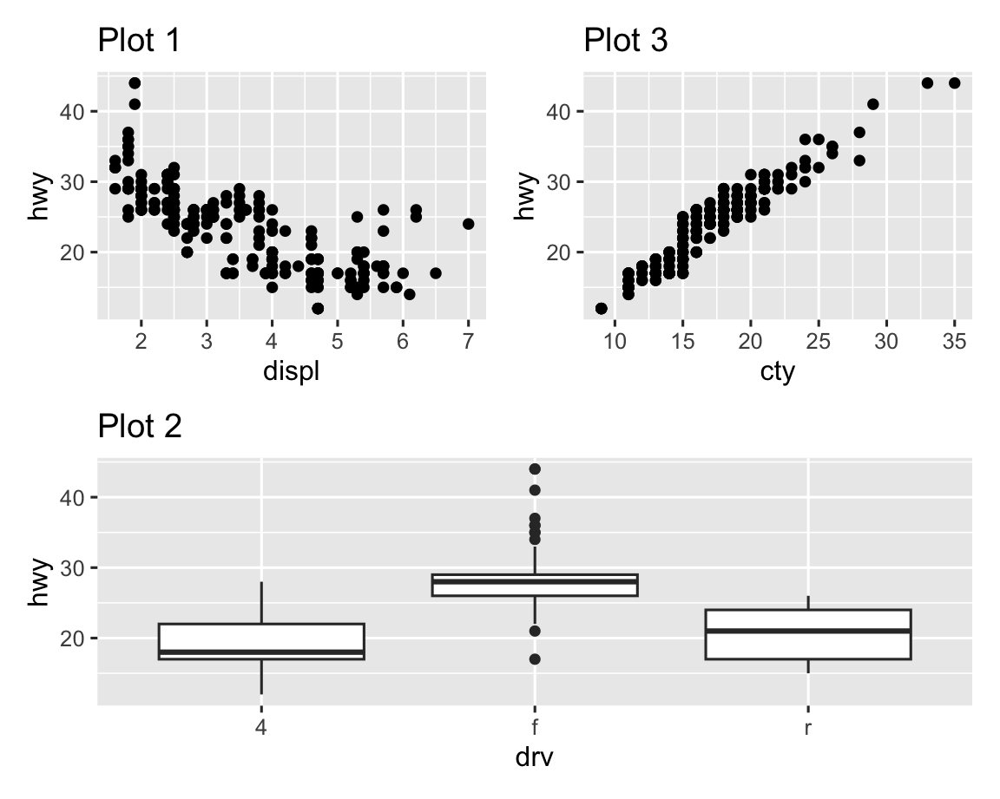
추가로 patchwork는 여러 플롯의 범례를 하나의 공통 범례로 모으고, 플롯 차원(dimensions)뿐만 아니라 범례의 배치도 사용자 정의하며, 플롯에 공통 제목, 부제, 캡션 등을 추가할 수 있게 해줍니다.
아래에서는 5개의 플롯을 만듭니다.
상자 그림과 산점도에서 범례를 끄고(turned off) & theme(legend.position = "top")을 사용하여 플롯 맨 위에 밀도(density) 플롯의 범례를 모았습니다(collected). 여기서 일반적인 + 대신 & 연산자를 사용한 것에 유의하세요. 이는 개별 ggplots가 아닌(as opposed to) patchwork 플롯에 대한 테마를 수정하고 있기 때문입니다.범례는 맨 위 guide_area() 안에 배치됩니다.마지막으로 patchwork의 다양한 구성 요소 높이도 사용자 정의했습니다. 가이드의 높이는 1, 상자 그림 3, 밀도 플롯 2, 패싯 산점도 4입니다. Patchwork는 여러분이 이 스케일을 사용하여 할당한(allotted) 면적을 나누고 이에 따라 구성 요소를 배치합니다.
p1 <- ggplot(mpg, aes(x = drv, y = cty, color = drv)) +
geom_boxplot(show.legend = FALSE) +
labs(title = "Plot 1")
p2 <- ggplot(mpg, aes(x = drv, y = hwy, color = drv)) +
geom_boxplot(show.legend = FALSE) +
labs(title = "Plot 2")
p3 <- ggplot(mpg, aes(x = cty, color = drv, fill = drv)) +
geom_density(alpha = 0.5) +
labs(title = "Plot 3")
p4 <- ggplot(mpg, aes(x = hwy, color = drv, fill = drv)) +
geom_density(alpha = 0.5) +
labs(title = "Plot 4")
p5 <- ggplot(mpg, aes(x = cty, y = hwy, color = drv)) +
geom_point(show.legend = FALSE) +
facet_wrap(~drv) +
labs(title = "Plot 5")
(guide_area() / (p1 + p2) / (p3 + p4) / p5) +
plot_annotation(
title = "City and highway mileage for cars with different drive trains",
caption = "Source: https://fueleconomy.gov."
) +
plot_layout(
guides = "collect",
heights = c(1, 3, 2, 4)
) &
theme(legend.position = "top")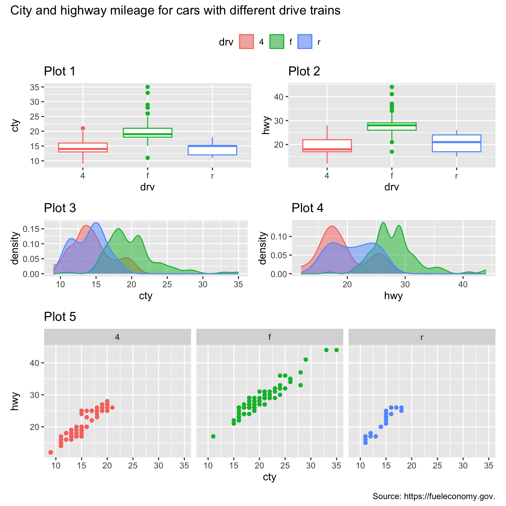
patchwork로 여러 플롯을 결합하고 배치하는 방법에 대해 자세히 알아보려면 패키지 웹사이트의 가이드를 살펴볼 것을 권장(https://patchwork.data-imaginist.com)합니다.
5.1 연습 문제
- 다음 플롯 레이아웃에서 괄호(parentheses)를 생략하면 어떻게 되나요? 이유를 설명할 수 있습니까?
p1 <- ggplot(mpg, aes(x = displ, y = hwy)) +
geom_point() +
labs(title = "Plot 1")
p2 <- ggplot(mpg, aes(x = drv, y = hwy)) +
geom_boxplot() +
labs(title = "Plot 2")
p3 <- ggplot(mpg, aes(x = cty, y = hwy)) +
geom_point() +
labs(title = "Plot 3")
(p1 | p2) / p3- 이전 연습 문제의 세 플롯을 사용하여 다음 patchwork를 다시 만드세요.
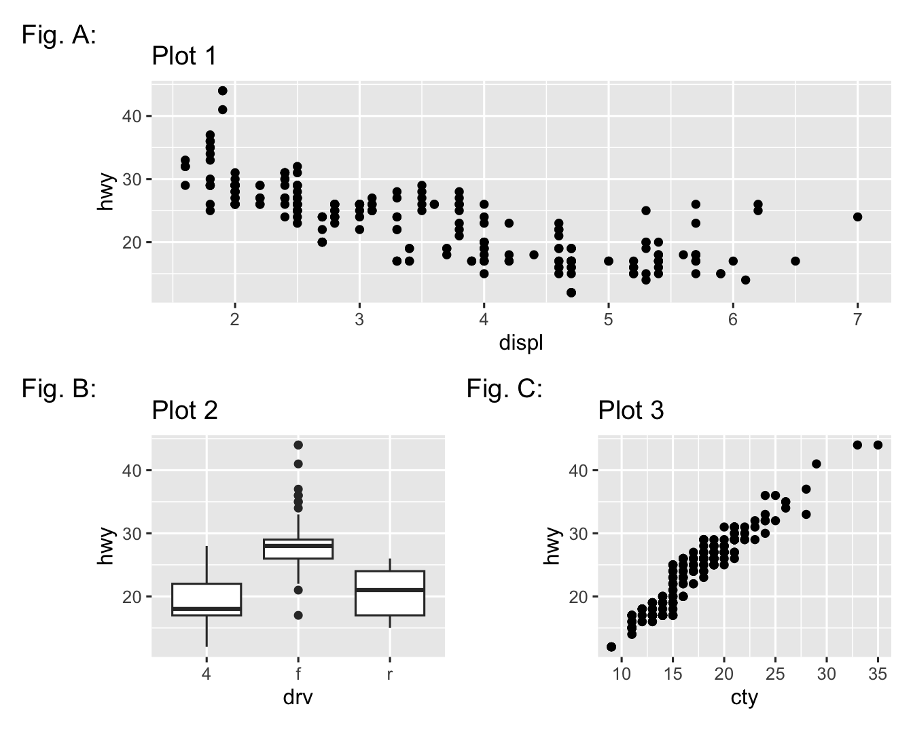
이러한 이미지를 테스트하기 위해 색맹을 시뮬레이션하는 SimDaltonism(https://michelf.ca/projects/sim-daltonism/)과 같은 도구를 사용할 수 있습니다.↩︎
많은 사람들이 기본 테마에 회색 배경이 있는 이유를 궁금해합니다. 이는 격자선을 보이게 유지하면서 데이터를 돋보이게(forward) 하기 위한 신중한 선택이었습니다. 흰색 격자선은 볼 수 있지만(위치 판단을 크게 돕기 때문에 중요함), 시각적 영향(visual impact)이 거의 없어 쉽게 무시(tune them out)할 수 있습니다. 회색 배경은 플롯에 텍스트와 유사한 활판 인쇄 색상(typographic color)을 부여하여 밝은 흰색 배경으로 튀지 않으면서 문서의 흐름에 그래픽이 자연스럽게(fit in) 맞물리도록 보장합니다. 마지막으로 회색 배경은 색상의 연속된 필드(continuous field of color)를 생성하여 플롯이 단일 시각적 개체로 인식되도록 보장합니다.↩︎